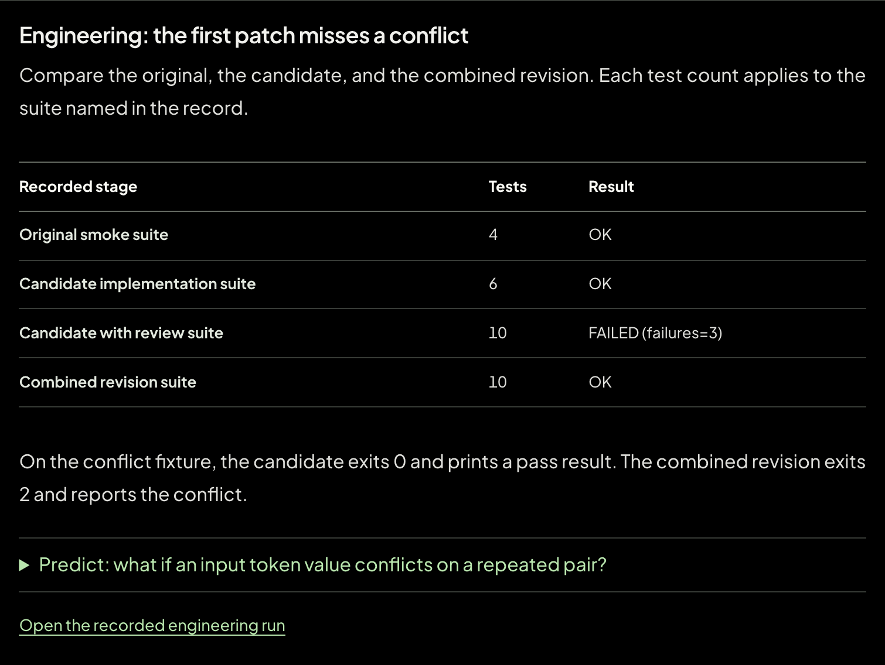

Build a change you can review
Read the code, reproduce a defect, make a bounded change and verify its final revision.
On this page
Repair an evaluation report that counts a delivery twice. Take the change from a local reproduction to a reviewed Git revision. The first candidate will pass its own tests and still return an incorrect success.
Use Python 3.8 or later and Git 2.28 or later. All fixtures are synthetic. The lab runs offline. An agent is optional. Use the prompts as checklists if you work alone.
From the guide folder, run the complete replay below. Work through the manual steps to see why each result changes the next decision.
python3 -B workshops/engineering/verify.pyExpected output is one line. Inspect the recorded commands and results.
Verified base, red tests, candidate, review counterexamples, and combined revision.Lesson 1. Map the repository and write the contract
A nightly evaluation reports case counts and token totals for each model run. A delivery retry carries a result the exporter already sent. Its second copy corrupts the totals for one run. Start at the report command and follow the data to the decision that changes the totals.


- Make a disposable copy. Run these commands from the guide folder. Keep the shell open for Lesson 2. The variables identify the original files and a new local repository.
workshop="$PWD/workshops/engineering" session="$(mktemp -d)" cp -R "$workshop/lab" "$session/repo" cd "$session/repo" git init -q -b main git config user.name Lab git config user.email lab@example.invalid git add . git commit -qm "Record original rollup" base="$(git rev-parse HEAD)" git status --shortExpect an empty status. The name and address are synthetic Git configuration for this copy. No remote is required. Keep the base ID in your task note so another reader can compare the same files.
- Find the declared behavior. Read the repository's AGENTS.md and CONTRACT.md. The first file gives the working directory, checks, and paths. The second gives the behavior. Confirm that the source you use can answer whether a repeat represents a delivery or a new attempt. Here, the producer supplies one terminal result per run and case. That rule makes a repeat eligible for a comparison with a prior result.
- Follow the public call. Read the files in the table in order. In the CLI, find the file open, the call to
rollup, the error handler, and the final print. In the parser, find where token values reach theResultobject. Then find the three counter updates in the reducer. Mark which statements prove the distinction between validation, counting, and output.
| Path or symbol | Responsibility | Evidence to retain |
|---|---|---|
trace_rollup/__main__.py · main | Read path and call parser with reducer | Print JSON after rollup returns. Map input or I/O errors to exit 2. |
trace_rollup/records.py · read_records | Validate rows and retain physical line numbers | Each nonblank row yields a Result. Extra fields never enter it. |
trace_rollup/aggregate.py · rollup | Count results and sum tokens by run | The original adds one count and two token values for each row. |
tests/test_baseline.py · run_cli | Call the public CLI from tests | The helper captures exit code, stdout, and stderr from a new process. |
| fixtures/nightly.jsonl | Exercise an ordinary export with retries | Line 2 reuses the case ID from line 1 in a distinct run. |
- Run the checks that already exist. Run the smoke suite. Then run the public command with the nightly fixture.
python3 -B -m unittest discover -s tests -v python3 -B -m trace_rollup fixtures/nightly.jsonlThe four smoke tests pass. They cover a legacy export, an invalid token value, a blank export, and truncated JSON. The CLI exits 0 with empty stderr. It prints this line.
{"runs": {"nightly-a": {"failed": 2, "input_tokens": 422, "output_tokens": 64, "passed": 2}, "nightly-b": {"failed": 1, "input_tokens": 245, "output_tokens": 42, "passed": 1}}}The reported success can enter a dashboard or cost estimate. An exception monitor sees no failure. Also check the numbers the consumer uses. A known sample gives you an independent check on a plausible report.
- Trace the state with a pencil. Read each row in source order. Use the pair of run ID and case ID to decide whether it is new. Keep the first result tuple for each pair. Change the totals only for a new pair. Compare your trace with the table in the next section.
Mitchell Hashimoto describes two responses to recurring agent errors. One gives the agent a rule at the path it visits. The other gives it a program that can detect a mistake. The Ghostty inspector instructions show both ideas in compact form. They point to the generated C header and the macOS build flag. They also state that the subsystem has no unit tests. Here the repository map tells you where to look. The CLI suite tests what the operator can observe. [DE01] [DE02]
Calculate the expected state before edits
The identity is (run_id, case_id). The comparison tuple is (status, input_tokens, output_tokens). A different delivery ID can carry an equal result. A case ID can also appear under a different run.


| Line | Run and case | Result tuple | Decision | Run totals after row |
|---|---|---|---|---|
| 1 | nightly-a / extract-17 | pass, 120, 24 | First for pair | 1 pass, 0 fail, 120 input, 24 output |
| 2 | nightly-b / extract-17 | fail, 105, 12 | First for pair in nightly-b | 0 pass, 1 fail, 105 input, 12 output |
| 3 | nightly-a / cite-03 | fail, 91, 8 | First for pair, no delivery ID | 1 pass, 1 fail, 211 input, 32 output |
| 4 | nightly-a / extract-17 | pass, 120, 24 | Equal repeat of line 1 | 1 pass, 1 fail, 211 input, 32 output |
| 5 | nightly-a / cite-03 | fail, 91, 8 | Equal repeat of line 3 | 1 pass, 1 fail, 211 input, 32 output |
| 6 | nightly-b / table-08 | pass, 140, 30 | First for pair | 1 pass, 1 fail, 245 input, 42 output |
The difference is concentrated in nightly-a. It has 422 input tokens because the original adds 120 + 91 twice. It has 64 output tokens for the same reason. One unique result per pair yields 211 input and 32 output. These values come from the fixture and contract. They remain the expected values when you replace the implementation.
| Context item | Filled task note | How to prove it |
|---|---|---|
| Base and symptom | The base is the saved commit. The nightly file reports 422 input tokens for nightly-a. | Run the public command at the base. |
| New behavior | Count once per equal tuple and pair. Reject an unequal tuple for the same pair. | Use an equal retry and a contradiction. Check stdout, stderr, and exit code. |
| Preserved behavior | Keep the command and output keys. Accept old rows with no metadata. Keep parser validation. | Run the smoke tests and legacy fixture. |
| Edit scope | The implementer owns the reducer and retry tests. The reviewer owns separate counterexample tests. | Inspect each branch diff from the base. |
| Stop condition | Stop when an owner rule conflicts with evidence or the patch needs a new producer field. | Record the open decision in the task note. |
- Write the note before you delegate. Include the table's decisions, the commands, and expected results. Give the agent a first path and a stop condition. Keep producer assumptions separate from observed behavior. Source code can show what the program does now. The product owner or contract governs what the program should do after the change.
- Decide which unknowns can block a patch. An empty legacy metadata field is harmless in this lab. If a real exporter can send multiple completed attempts for one pair, an attempt ID or finalization rule may be necessary. Ask the producer owner to choose that rule. A report that compares status and tokens cannot infer which of two distinct attempts should count.
- Check your handoff. Give a reader the map, base and note without an implementation plan. Ask the reader to name the edit site and predict the result for a conflict. If they name the parser as the sole edit site, show how it lacks prior rows. If they predict a successful report, point to the invalid-file clause before the reader patches anything.
A repository instruction file can direct a worker to a known command. A test can confirm the worker used a behavior that meets the contract. Use the observed error and hand trace as separate evidence. They answer different questions about the same output. Use the orientation prompt. Use the contract prompt.
Lesson 2. Take the defect to a reviewed patch
Start from the commit selected in Lesson 1. Use one branch for implementation and one for counterexamples. The branches can proceed at the same time. One person can do both roles in separate passes. In either case, derive review cases from the contract before you inspect the first patch.
- Create both branches from the base. A worktree has its own checkout and index. Its repository refs are shared. Use distinct paths for files and temporary results. The lab runs each CLI invocation as a new process.
git -C "$session/repo" worktree add -b implement/retries "$session/implementation" "$base" git -C "$session/repo" worktree add -b review/cases "$session/review" "$base" git -C "$session/repo" worktree listExpect three worktrees with the same initial commit. If a branch or path already exists, inspect it before you reuse it. Check which directory your agent can edit. A Git worktree alone cannot restrict a process to that directory. [DE06]
- Write a test that fails on the defect. Draft the implementation tests or copy the provided version. Assert both runs so a repair cannot drop the second occurrence of a case across runs. Reverse the input to check that the report sorts keys and keeps the same totals for valid rows.
cd "$session/implementation" cp "$workshop/variants/test_retries.py" tests/ python3 -B -m unittest discover -s tests -vExpect exit 1 and
FAILED (failures=2). Both retry tests must fail on totals. The four smoke tests must pass. For nightly-a, the failing comparison has 422 where it expects 211 input tokens. An import failure answers nothing about the defect. Fix setup errors and repeat this stage before you change the reducer.Simon Willison's red/green TDD chapter explains why the red phase matters. A test that already passes can skip the behavior you want to change. In this lab, expect the same comparison to fail once and pass after the patch. Save both outcomes with their code state. [DE03]
- Apply the first candidate. The supplied candidate is a deliberate partial repair. It uses a set of run and case pairs. See whether the implementation tests notice what it omits.
cp "$workshop/variants/candidate.py" trace_rollup/aggregate.py python3 -B -m unittest discover -s tests -v git add trace_rollup/aggregate.py tests/test_retries.py git commit -qm "Count a delivery retry once" candidate="$(git rev-parse HEAD)" git diff --stat "$base" "$candidate"Expect six tests to pass. The candidate diff has two files. One adds the retry checks. The other skips any repeat of a key. Keep the commit ID in the handoff so the reviewer can reproduce the candidate state after the implementation branch advances.
The candidate fixes the observed overcount because the nightly fixture contains only equal retries. It also skips an unequal result if its key repeats. A reader can catch this in the code, but an executable case shows the actual consequence. The next part uses one.
Challenge the patch with an independent case
Give the reviewer the producer contract, the base revision, and a synthetic sample. Omit the implementation transcript. Request a public reproduction and an expected response before any verdict. Provide the candidate revision after the reviewer derives the cases.


- Record the independent cases on their own branch. Write the counterexamples or copy the supplied review tests. A review branch with failing contract tests can be a valid handoff. Its responsibility is to preserve the checks, while another branch supplies the fix.
cd "$session/review" cp "$workshop/variants/test_review.py" tests/ git add tests/test_review.py git commit -qm "Add review counterexamples" review="$(git rev-parse HEAD)" git diff --name-only "$base" "$review"Expect only
tests/test_review.pyin the last output. The tests force status, input tokens, and output tokens to disagree separately. One test retains the original line after an equal repeat. Another gives an invalid value on a repeated key. Both can catch a repair that appears to handle the simple conflict fixture. - Probe the exact candidate. Use a detached worktree to test the candidate without an edit to either branch. Copy the review test into that probe for the test run.
git -C "$session/repo" worktree add --detach "$session/candidate-probe" "$candidate" cp "$session/review/tests/test_review.py" "$session/candidate-probe/tests/" cd "$session/candidate-probe" git rev-parse HEAD python3 -B -m trace_rollup fixtures/conflict.jsonl python3 -B -m unittest discover -s tests -vThe candidate CLI exits 0 with empty stderr and prints the line below. The test suite exits 1. It reports 10 tests and three failures. One failure checks status. Two subtest failures check the token fields.
{"runs": {"daily": {"failed": 0, "input_tokens": 120, "output_tokens": 24, "passed": 1}}}
| Physical line | Input in conflict.jsonl | Candidate action | Required action |
|---|---|---|---|
| 1 | daily / extract-17, pass, 120, 24 | Add pair to set. Increment totals. | Store tuple and line 1. Increment totals. |
| 2 | Blank line | Parser skips it. | Keep physical line count. |
| 3 | daily / extract-17, fail, 120, 24 | Pair exists. Skip row. | Compare with line 1. Reject file. |
| End | Report boundary | Print pass result and exit 0. | Print error to stderr. Leave stdout empty and exit 2. |
Write the finding against the candidate ID and the if key in seen branch in trace_rollup/aggregate.py. Use the three-line fixture as the reproduction. State the expected exit 2 and empty stdout. State the observed exit 0 and successful pass report. Explain that a downstream evaluator could treat this output as evidence of a pass. The report owner can assess the effect without access to the reviewer's session.
Armin Ronacher describes a fresh review context in Pi's session tree. In the public extension, buildReviewPrompt selects instructions via the review target type. Its branch case calls getMergeBase and has a separate flag for local edits. This lab applies both ideas with a fresh review task and an explicit base-to-candidate diff. Git state and session history remain distinct. [DE04] [DE05]
When a reviewer can name only a likely problem, request an exact case or label the finding unverified. In this lab the fixture already demonstrates the consequence. No second opinion can change its observed exit code. The use of a fresh session reduces exposure to the first patch's assumptions. It cannot guarantee independent judgment.
Repair and verify the combined revision
Use a map from pair to result tuple and first physical line. A tuple comparison decides whether a valid repeat can affect the report. Retain the first line for error messages. Delay stdout until the input completes.


- Apply the repair to the implementation branch. Compare the provided repair with your own. Check that every row still passes through the parser before you compare results. The CLI already catches
TraceErrorand returns exit 2.cd "$session/implementation" cp "$workshop/variants/repaired.py" trace_rollup/aggregate.py git diff -- trace_rollup/aggregate.py python3 -B -m trace_rollup fixtures/conflict.jsonl git add trace_rollup/aggregate.py git commit -qm "Reject conflicting terminal results"Expect the CLI to exit 2 with empty stdout. A shell with
set -ecan stop at this command. Run it as a separate check before you proceed. The exact stderr is below.error: line 3: terminal result conflicts with line 1The reducer's counters exist only in the process. The CLI publishes them only after the reducer returns. An error on line 3 therefore exposes no partial counts, even though line 1 reached the reducer. Each valid input row costs one map lookup. The map keeps one entry per distinct pair until the report finishes. Consider that memory cost before you adopt the design for large files.
- Compare branch scopes and integrate locally. Review file paths from the same base first. Then join the branches in the primary worktree.
cd "$session/repo" git diff --name-only "$base" implement/retries git diff --name-only "$base" review/cases git merge --ff-only implement/retries git merge --no-ff -m "Integrate review cases" review/cases git log -1 --format='%H %P' git status --shortThe implementation owns
tests/test_retries.pyandtrace_rollup/aggregate.py. The review branch ownstests/test_review.py. The merge log gives the integrated commit and its two parents. Expect the parents to equal the repaired implementation and review commits in that order. Expect a clean worktree. If your path list includes another file, inspect the reason before you merge. - Run the gate on the combined commit. Check the diff and the entire suite. Run the public CLI again to check the interface directly.
git diff --check "$base" HEAD python3 -B -m unittest discover -s tests -v python3 -B -m trace_rollup fixtures/nightly.jsonl python3 -B -m trace_rollup fixtures/legacy.jsonlThe diff check exits 0 and prints nothing. The suite reports 10 tests and
OK. Both CLI commands exit 0 with empty stderr. They print these lines respectively.{"runs": {"nightly-a": {"failed": 1, "input_tokens": 211, "output_tokens": 32, "passed": 1}, "nightly-b": {"failed": 1, "input_tokens": 245, "output_tokens": 42, "passed": 1}}} {"runs": {"legacy": {"failed": 1, "input_tokens": 7, "output_tokens": 2, "passed": 1}}}Run the conflict and invalid probes with error capture from a shell that can handle expected failure. Store both streams separately. This checks the caller contract that no report leaves the program after an error.
for fixture in conflict invalid do code=0 python3 -B -m trace_rollup "fixtures/$fixture.jsonl" >"$session/$fixture.out" 2>"$session/$fixture.err" || code=$? printf '%s exit %s\n' "$fixture" "$code" wc -c <"$session/$fixture.out" cat "$session/$fixture.err" doneExpect exit 2 and 0 stdout bytes in both cases. The error for the second fixture is
error: line 2: invalid input_tokens. A boolean passes anisinstance(value, int)check in Python. The parser requires the exact integer type so a boolean cannot enter the report. - Save the review decision. Name the exact combined revision and both parent revisions. Record the tests, fixture paths, exit codes, missing cases, and the closed finding. The lab finishes at a local reviewed revision. If a consumer later changes the export contract, review that change against a fresh base and new cases.
Checks on two branches leave an integration gap. The revision you accept must contain the patch and the independent tests. Re-run the gate if a later merge changes the revision, even when the reducer file stays the same. A caller or fixture can change assumptions the reducer relies on. Read the local replay record.
Failure injection and exercises
Use the lab's disposable copy. Predict the visible effect before you run each experiment. Then compare it with the answer. A negative control should cause the promised check to fail for a specific reason.
Use the same shell as Lesson 2. Make two detached worktrees at the accepted revision. The changes in one worktree cannot affect the other's files.
integrated="$(git -C "$session/repo" rev-parse HEAD)"
git -C "$session/repo" worktree add --detach "$session/global-case-id" "$integrated"
git -C "$session/repo" worktree add --detach "$session/overwrite-first-line" "$integrated"Use only the case ID as the key
Run cd "$session/global-case-id". Edit trace_rollup/aggregate.py. In rollup, replace key = (record.run_id, record.case_id) with key = record.case_id. Predict which valid row first fails. Then run both commands.
python3 -B -m trace_rollup fixtures/nightly.jsonl
python3 -B -m unittest discover -s tests -vHint. Find the earliest case name that occurs under two runs. Compare status and both token counts.
Answer. Line 2 has the same case ID as line 1 and a distinct tuple. The mutant exits 2 with error: line 2: terminal result conflicts with line 1 and empty stdout. Both retry tests fail. The producer contract makes run ID part of the identity.
Allow a repeated row to reset the source line
Run cd "$session/overwrite-first-line". Edit trace_rollup/aggregate.py. In rollup, add seen[key] = (signature, record.line) above continue. Match the indentation of continue. Predict whether the suite can detect a change to error text when the success totals agree. Run the same two commands as in the first exercise.
Hint. Two review inputs have an equal retry followed by an unequal tuple.
Answer. The test for each token field fails its stderr assertion. The mutated code reports line 2 as the prior line. The contract says to keep line 1. The nightly output stays correct, so the ordinary retry tests still pass.
Choose the latest row when two rows disagree
Design a test for a reducer that uses the last valid tuple for a pair. Use the three physical lines in the existing conflict fixture. What would you assert if the producer wanted the latest result instead?
Answer. Today the only accepted response is exit 2 with empty stdout. A latest-result policy requires a new source order rule. If arrival order governed, the expected report would have daily fail 1, pass 0, input 120, and output 24. The reversed file would report a pass. If a producer sequence governed, reversing lines should leave the selected result unchanged. Decide the rule and add a sequence field before you ask for edits.
Detect a bad review report
A reviewer says the first candidate corrupts the legacy file because it has no delivery IDs. Which probe can confirm the claim? Which source explains the result?
Answer. Run python3 -B -m trace_rollup fixtures/legacy.jsonl in the candidate worktree. Check exit 0 and the totals for legacy. The parser retains the fields in Result regardless of delivery ID. The candidate key uses the run and case. Reject the claim after you record the reproduction. Keep the verified conflict finding.
Inspect the two exercise diffs before cleanup. The next commands discard the two known exercise edits and remove their temporary worktrees. Keep any independent work before you run them.
cd "$session/repo"
git -C "$session/global-case-id" diff
git -C "$session/overwrite-first-line" diff
git -C "$session/global-case-id" restore -- trace_rollup/aggregate.py
git -C "$session/overwrite-first-line" restore -- trace_rollup/aggregate.py
git worktree remove "$session/global-case-id"
git worktree remove "$session/overwrite-first-line"Apply the method to your repository
Start with a command your report job, CLI user, or API consumer actually uses. Use a sanitized fixture with enough structure to exercise the defect. Keep any real trace contents and credentials out of the fixture and review prompt. Choose one consumer-visible effect and write an expected value before opening a patch session.
| Workshop decision | Question in your repository | Artifact to save |
|---|---|---|
| One result per run and case | Which producer key defines the record? Can a retry contain a new attempt? | Schema, owner decision, and a sample for each event type. |
| Tuple comparison | Which fields affect a report, a bill, or an evaluation decision? | Field list and examples that change one field at a time. |
| Whole-file rejection | Can a partial result escape to consumers? Can a retry repeat a prior side effect? | Error contract and an interruption check at the publish boundary. |
| Four smoke checks | Which old caller, file version, and error code must survive? | Existing commands and one legacy fixture with an expected result. |
| Independent cases | Which assumption could remain wrong with green unit tests? | Another person's counterexample or a test from a fresh session. |
| Combined local gate | Which revision, dependencies, and inputs does the release test? | Exact revision and observed results from a clean checkout. |
If the real reducer writes to a database, an empty stdout check is insufficient. Inspect the transaction boundary. A test can force an invalid row after an earlier valid write. Use a disposable database and assert that any write or checkpoint follows the chosen rollback or resume rule. If several workers share one store, run a two-worker test and observe records they both can see. A pure in-memory map in this project cannot establish either property for that design.
Schedule parallel work only when the tasks have a stable common contract and different outputs. An implementer can own the service and a reviewer can own one test file. If the missing rule affects both roles, resolve that rule first. For one small patch, a single writer followed by a fresh review can reduce the time you spend reconciling files.
Prompt files and invocation
Open one file and paste its filled example into the corresponding agent session. Give the session the worktree path and the base or candidate commit. Use the reusable form and replace every brace field when you transfer the workflow. The prompts can also guide a manual pass.
| Prompt | When to use it | Acceptance check |
|---|---|---|
| Map the public entry point | Before edits | One current path from command to output. |
| Write a behavior contract | After the map | Independent expected totals and one error outcome. |
| Record the regression | On the implementation base | Failing assertion about the intended behavior. |
| Repair the owning code path | After reproduction | Small diff with preserved interface checks. |
| Derive independent checks | On a separate branch | Expected effects from the producer contract. |
| Review a pinned patch | After the candidate commit | One exact repro per accepted finding. |
| Verify the combined revision | After the review fix | Both parents, clean status, checks and exact outputs. |
| Audit a patch claim | Before you accept the revision | Claims linked to observations and gaps. |
| Transfer the method | Before a task in your own repository | Owned decisions, edit scope, and independent checks. |
Open the workshop file map. Read the repository map, delivery state, or review branches as Mermaid source.
Record your practice
Check a step only after your attempt. These marks record your own assessment.